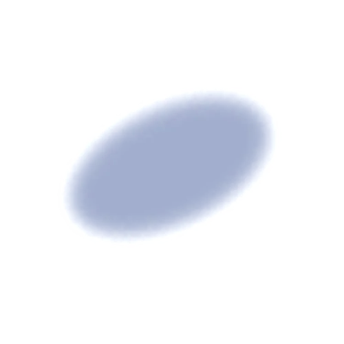
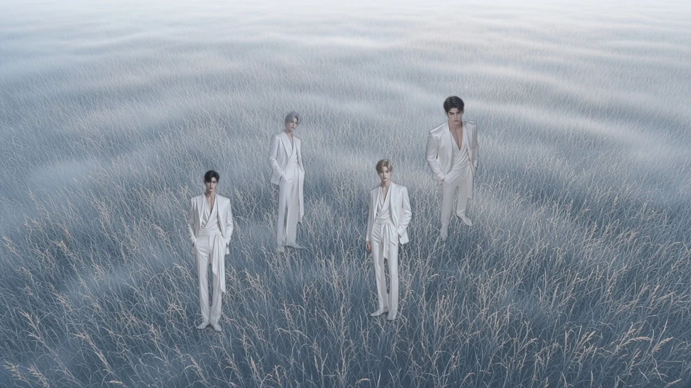
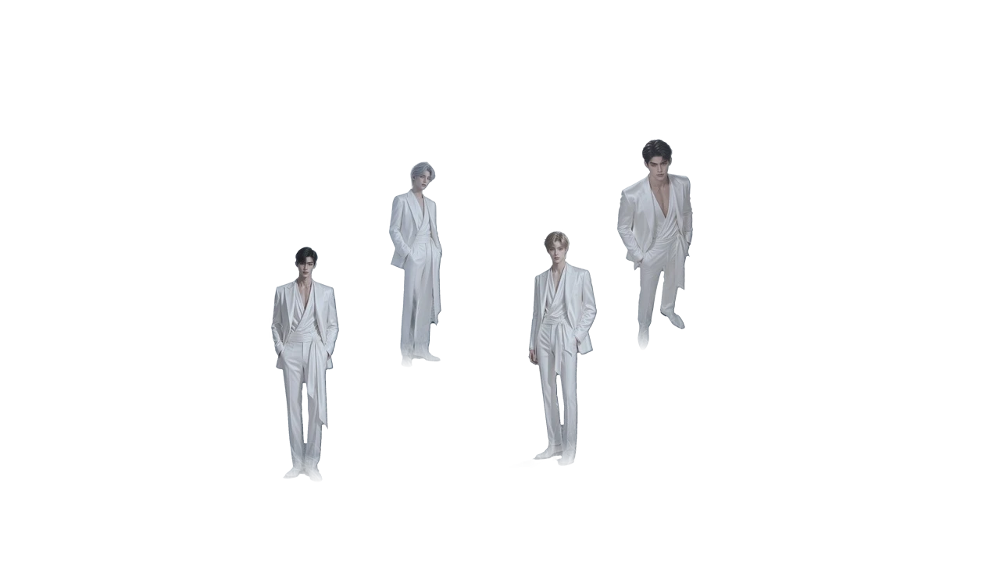

GYEOLLAK · 結落 / 缺落
SCROLL
II · 낙하 — DROP
02한 방울이 떨어져 나간다.
III · 바다 — SEA 대체 소스 · 바다 영상 예정
03닿는 순간, 번지기 시작한다.
IV · 수면 아래 — UNDER 대체 소스
04소리가 먼저 사라지고, 빛이 남는다.

V · 금붕어 — GOLDFISH 그록 테스트 droplet.mp4 · 검수 전
05방울 안에서, 무언가 헤엄친다.
VI · 꽃 — FOUR FLOWERS
01 / 04

VII · 빛 — PETALS / LIGHT 꽃잎 대체 소스
07흩어진 것들이 한 곳으로 모인다.

우리는 닿는 순간부터 번지고 있었다

VIII · 사람 — 네 사람의 입구
선을 따라 한 사람을 누르면 개인 프로필로
II 사람으로 들어가기 →